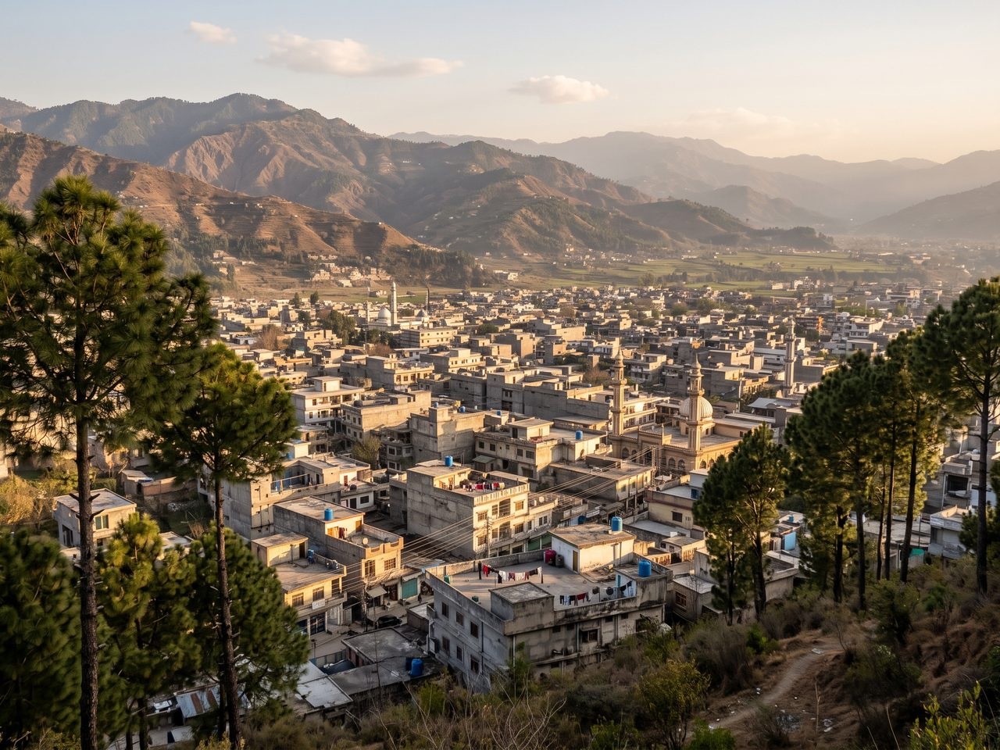

Hazara · Khyber Pakhtunkhwa · Pakistan
Abbottabad
The City of Pines
Cool air, deodar and chir pine on every ridge, a bazaar that smells of cardamom and roasting corn, and hill stations less than an hour away. This is my hometown.

Since 1853 ≈1,260 m above sea level
Abbottabad at a glance
Scroll-driven strip
Top places, side to side
Six of the places people actually take you when you visit. The strip pans as you scroll on a desktop; on a phone just swipe it.
-
 images/shimla-hill.jpg
Nature
images/shimla-hill.jpg
NatureShimla Hill
The city's balcony. Ten minutes uphill from the bazaar for roasted corn, a sunset and the whole valley laid out below.
-
 images/thandiani.jpg
Nature
images/thandiani.jpg
NatureThandiani
Literally "very cold". A winding drive east of the city to about 2,700 m, where the forest opens onto ridge after ridge of blue hills.
-
 images/ilyasi-masjid.jpg
Religious
images/ilyasi-masjid.jpg
ReligiousIlyasi Masjid
Nawan Shehr's landmark mosque, built over a natural spring, with cold water running under the courtyard and pakora stalls at the gate.
-
 images/sajikot-waterfall.jpg
Nature
images/sajikot-waterfall.jpg
NatureSajikot Waterfall
A tall, cold curtain of water beyond Havelian. Best in spring and just after the monsoon, when the flow is loud enough to drown conversation.
-
 images/pipeline-track.jpg
Nature
images/pipeline-track.jpg
NaturePipeline Track
The flat forest walk from Dunga Gali towards Ayubia, following an old water pipeline through moss, monkeys and enormous trees.
-
 images/nathiagali.jpg
Nature
images/nathiagali.jpg
NatureNathiagali
The best known of the Galyat hill stations, about an hour away: colonial-era churches, cloud in the trees and snow most winters.
Start anywhere
Explore the whole city
Seven ways in: the long history, the hills, the food, the people, the practical details, the photographs and a way to say hello.
-
History
From Gandhara-era valley routes and the Sikh period to a British cantonment in 1853, the Karakoram Highway and the rebuilding after 2005.
Read the timeline → -
Places
Thirteen places worth your time, filterable by nature, historic, religious and family, with best seasons and distances.
Browse places → -
Food
Chapli kabab, Hazara karahi, trout from the hill streams, pink Kashmiri chai and a one-day eating route through the bazaars.
Get hungry → -
Culture
Hindko, Pashto and Urdu in the same conversation, Eid mornings, handicrafts and the Hazarewal way of feeding a guest.
Meet the city → -
Visit
Two hours from Islamabad on the Hazara Motorway, a month-by-month weather table, what to pack and how to get around.
Plan the trip → -
Gallery
Pines, ridges, bazaar corners and winter mornings, in a tilted masonry wall of photographs with a full-size lightbox.
See photographs → -
Contact
Corrections, better photographs, a place I have missed — send it over. The form is a demo, but the invitation is real.
Say hello →
Why come at all
A hill city that still works for a living
Abbottabad is not a resort. It is a working city of schools, colleges, hospitals and barracks that happens to sit in a bowl of pine-covered hills at around 1,260 metres. That combination is the whole appeal: you get hill-station air and mountain views without giving up bakeries, bookshops, hospitals and reliable food after dark.
The geography does most of the work. The valley runs roughly north to south, with Sarban Hill on one side and Shimla Hill on the other, so almost every street ends in a slope and almost every rooftop has a view. Summer afternoons rarely feel punishing the way the plains do, and by October the mornings are cold enough for a shawl.
Then there is position. The city sits on the old road north, today the Karakoram Highway, which means a weekend here can stretch into the Galyat hill stations, the Kaghan valley, or a long drive towards Gilgit-Baltistan. Most visitors arrive expecting a stopover and end up staying an extra night for the corn, the chai and the sound of rain on pine needles.
- Cool, walkable summers — mid-20s to low-30s °C at the hottest
- Six hill stations and three waterfalls within about an hour
- Two hours from Islamabad on the Hazara Motorway (E-35)
- Roasted corn, chapli kabab and pink chai on the same street
- Snow at Thandiani and Nathiagali most winters
images/why-visit.jpg
Two hours from Islamabad.
Bring a jacket.
Spring for blossom, summer for the escape, autumn for clear ridgelines, winter for snow in the Galyat. There is no wrong month, only different jackets.